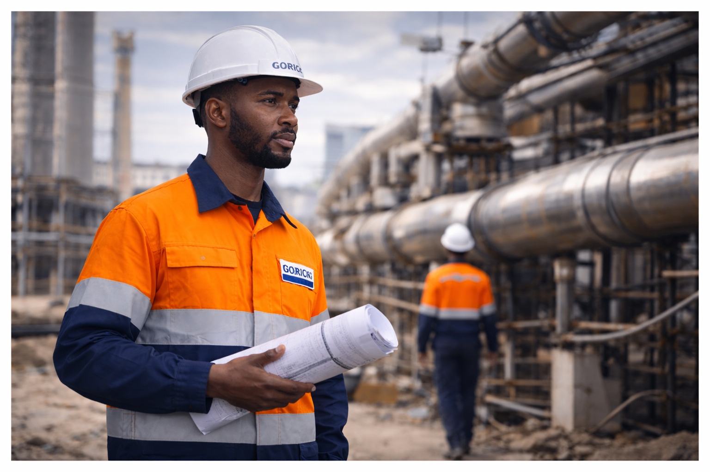
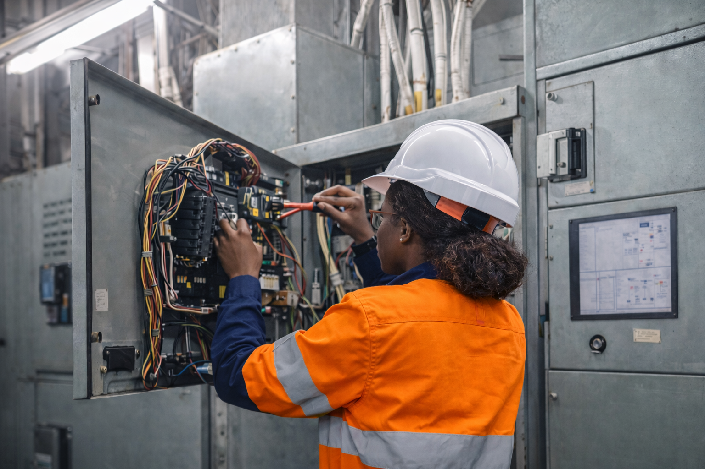
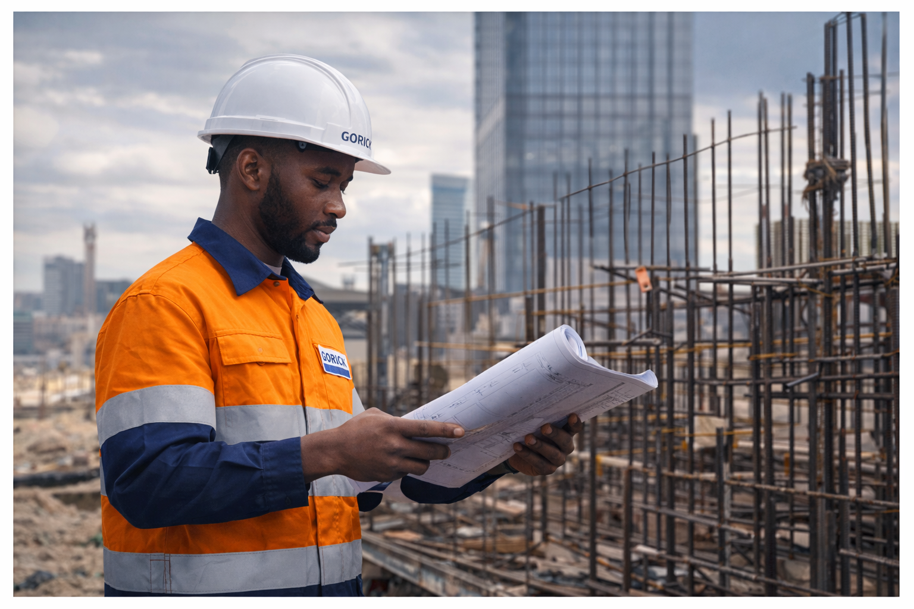
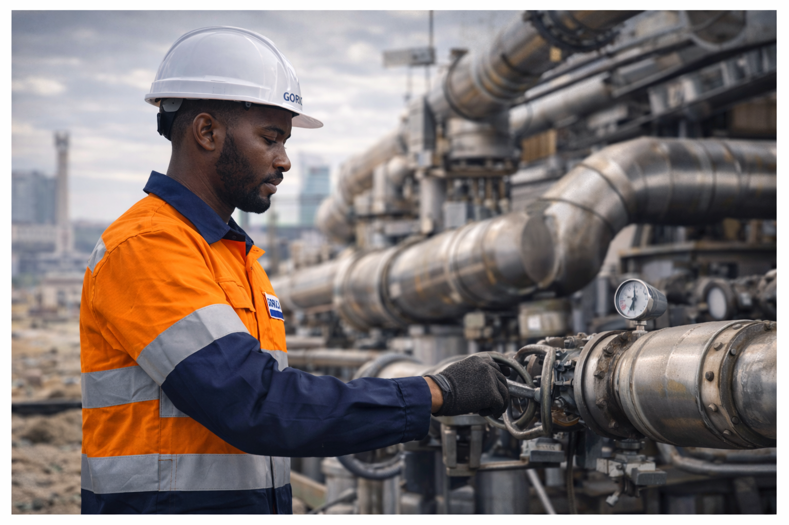
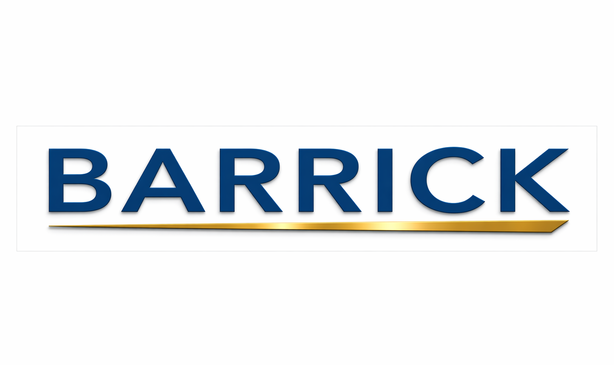
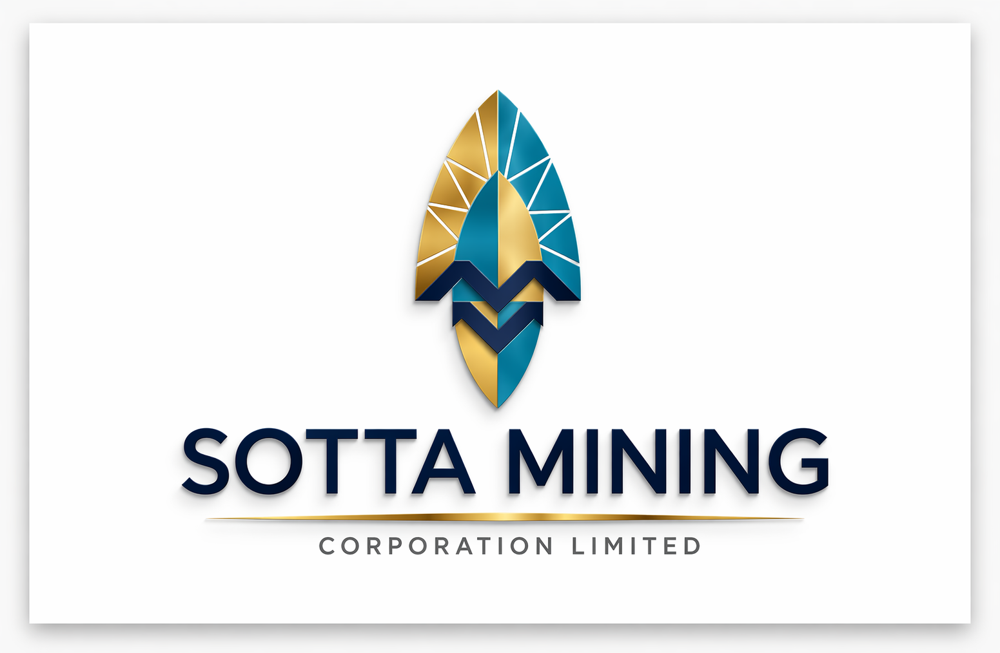
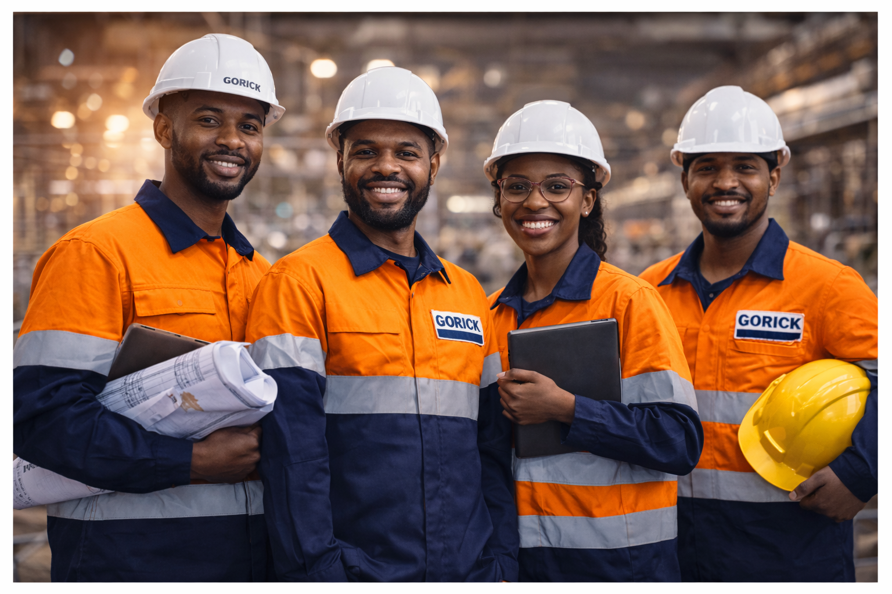

Our Vision
To be a trusted engineering solutions provider in Tanzania, recognized for quality, innovation, reliability, and sustainable contribution to national development.
Integrated Engineering Solutions
Gorick Group delivers civil, electrical, and mechanical engineering solutions that support infrastructure development across residential, commercial, industrial, and public-sector projects in Tanzania.
About Us
Gorick Group is a registered private company in the United Republic of Tanzania, specializing in Civil, Electrical, and Mechanical Engineering services. We provide integrated engineering solutions that support infrastructure development across residential, commercial, industrial, and public-sector projects.
With a strong focus on quality, innovation, and reliability, our multidisciplinary team combines technical expertise with practical execution to deliver efficient, compliant, and dependable project outcomes.
We work closely with clients to understand project requirements, maintain professional and safety standards, and provide engineering solutions that enhance operational efficiency, support sustainable development, and improve lives within the communities we serve.
Core Values
Our work is guided by professionalism, quality execution, collaboration, and a practical commitment to delivering dependable engineering results.
We prioritize safe work practices in every project.
We focus on durable, professional, and efficient results.
Our engineers bring practical knowledge across key fields.
We work with discipline to complete tasks on schedule.

Choosing Gorick Group means partnering with a trusted engineering solutions provider that combines technical expertise, practical experience, and a commitment to excellence.
Integrated civil, electrical, and mechanical engineering support in one team.
Professional execution guided by compliance, performance, and reliability.
Practical engineering solutions supported by technical thinking and field experience.
We listen, adapt, and collaborate to deliver solutions that fit project needs.
Vision & Mission
Our vision and mission reflect the standards, direction, and long-term value we aim to deliver through engineering excellence.
To be a trusted engineering solutions provider in Tanzania, recognized for quality, innovation, reliability, and sustainable contribution to national development.
To deliver practical, safe, and professionally executed civil, electrical, and mechanical engineering solutions that support client success, operational efficiency, and infrastructure growth.
Our Services
We provide practical engineering support tailored to infrastructure, industrial, construction, and technical project requirements.

PLC programming, human machine interface design, pneumatic and hydraulic on-site field wiring checkouts, control panel design, field wiring drawings, testing and commissioning, modular design, and electrical system support.

Infrastructure design, supervision, construction support, water systems, structural works, maintenance planning, and technical project coordination.

Mechanical performance assessment, equipment maintenance, modification, testing, technical advice, and operational reliability support.
Key Client Context
Our engineering focus aligns with the technical demands of large-scale industrial, mining, and infrastructure-related operations in Tanzania.

Barrick is a major gold and copper producer with an established presence in Tanzania, including Bulyanhulu in Kahama district. Large-scale mining operations and associated infrastructure environments create strong alignment with Gorick Group’s civil, electrical, and mechanical engineering support capabilities.

Sotta Mining is developing the Nyanzaga Gold Project in the Mwanza Region, including a processing plant, open pit mine, and associated infrastructure. This type of project environment closely matches Gorick Group’s integrated engineering service scope across construction, systems, and technical support.
Projects Complete
Years Experience
Team Member
Awards Winning
Our Projects
We deliver engineering support across industrial, construction, and infrastructure environments through planning, technical skill, and disciplined execution.

Our Team
Our team works across civil, electrical, and mechanical disciplines to provide dependable technical solutions, strong coordination, and practical project support for every stage of execution.
Core Engineering Fields
Commitment to Quality
Support Mindset
Contact Us
Reach out to Gorick Group for professional support in civil, electrical, and mechanical engineering services.
P.O. Box 647, Kahama, Shinyanga, Tanzania
+255 759 791 941
info@goricgroup.co.tz